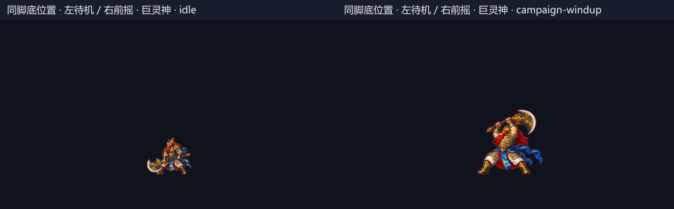

劫火重燃 · 美术截图审查
2026-10-30 · Vite 当前生产构建 · 12.4.1。技能为导入受控场景后真实按键与正常模拟截帧；地图为生产渲染器固定场景。并非十五关自然通关。点击原图查看 960×540 未加工截图；汇总图仅缩放和加标题。透明底的贴图对照仅用于检验脚底与体型，不代表游戏背景。
查看审查结论 · 构建身份 · 技能阶段与缺帧记录 · 地图采集记录 · 技能连续录像
wukong
孙悟空 · 第1击

起手 · 生效 · 命中 · 收回
孙悟空 · 第2击

起手 · 生效 · 命中 · 收回
孙悟空 · 第3击

起手 · 生效 · 命中 · 收回
孙悟空 · 破空棍劲

起势 · 飞行 · 命中 · 结束
孙悟空 · 分身

施放 · 交互 · 持续 · 结束
孙悟空 · 如意伸刺

起势 · 移动或蓄力 · 生效 · 收势
孙悟空 · 法天象地

起势 · 打击 · 释放 · 收势或持续
nezha
哪吒 · 第1击

起手 · 生效 · 命中 · 收回
哪吒 · 第2击

起手 · 生效 · 命中 · 收回
哪吒 · 第3击

起手 · 生效 · 命中 · 收回
哪吒 · 乾坤圈

起势 · 飞行 · 命中 · 结束
哪吒 · 混天绫

施放 · 交互 · 持续 · 结束
哪吒 · 风火轮

起势 · 移动或蓄力 · 生效 · 收势
哪吒 · 莲火轮阵

起势 · 第一轮释放 · 第二轮释放 · 附枪持续
erlang
杨戬 · 第1击

起手 · 生效 · 命中 · 收回
杨戬 · 第2击

起手 · 生效 · 命中 · 收回
杨戬 · 第3击

起手 · 生效 · 命中 · 收回
杨戬 · 射雕弓

起势 · 飞行 · 结束 · 命中
杨戬 · 天眼

施放 · 持续 · 交互 · 结束
杨戬 · 神行步

起势 · 生效 · 移动或蓄力 · 收势
杨戬 · 哮天逐邪

起势 · 释放 · 打击 · 收势或持续
wukong
孙悟空 · 撑天坠击

立棍 · 撑升 · 下坠 · 落地
孙悟空 · 回身棍阵

准备 · 前层挥转 · 后层挥转 · 收势
nezha
哪吒 · 三头六臂

显化 · 持势 · 枪法 · 命中
erlang
杨戬 · 三目神光

蓄光 · 释放 · 脉冲 · 收势
wukong
符术 · 三霄雷符

落点 · 雷击 · 命中 · 消散
符术 · 金刚护符

施符 · 护体 · 持续 · 消退
怪物 / Boss 技能
断云重斧

预警 · 释放 · 受击接触 · 收招
踏云震

预警 · 释放 · 受击接触 · 收招
横斧冲阵

预警 · 释放 · 受击接触 · 收招
朱笔定罪

预警 · 释放 · 受击接触 · 收招
缚魂锁道

预警 · 释放 · 受击接触 · 收招
追魂复判

预警 · 释放 · 受击接触 · 二次预警 · 复判释放 · 收招
九首毒扇

预警 · 释放 · 受击接触 · 收招
污潮横涌

预警 · 释放 · 受击接触 · 收招
九首俯冲

预警 · 释放 · 受击接触 · 收招
东海潮涌

预警 · 释放 · 受击接触 · 收招
双龙水柱

预警 · 释放 · 受击接触 · 收招
龙角雷诏

预警 · 释放 · 受击接触 · 收招
七宝镇阵

预警 · 释放 · 受击接触 · 收招
天王断邪

预警 · 释放 · 受击接触 · 收招
塔火轮潮

预警 · 释放 · 受击接触 · 收招
震盾余波

预警 · 释放 · 受击接触 · 收招
近身斩击

预警 · 释放 · 受击接触 · 收招
锁向远射

预警 · 释放 · 受击接触 · 收招
举盾突进

预警 · 释放 · 受击接触 · 收招
五章地图
1 · 云上 · 踏云前哨

起点 · 路线前段 · 路线后段 · 终点 · 首领场地 · 清场 · 灯灭/关门开放 · 固定补给
2 · 云上 · 巡风断桥

起点 · 路线前段 · 路线后段 · 终点 · 首领场地 · 清场 · 灯灭/关门开放 · 固定补给 · 脆台开裂 · 脆台断开 · 落点近看 · 排除敌人遮挡
3 · 云上 · 斩云天门

起点 · 路线前段 · 路线后段 · 终点 · 首领场地 · 清场 · 灯灭/关门开放 · 固定补给
4 · 地府 · 鬼门引路

起点 · 路线前段 · 路线后段 · 终点 · 首领场地 · 清场 · 灯灭/关门开放 · 固定补给 · 地刺 · quiet · 地刺 · warning · 地刺 · active
5 · 地府 · 判牒回廊

起点 · 路线前段 · 路线后段 · 终点 · 首领场地 · 清场 · 灯灭/关门开放 · 固定补给 · 地刺 · quiet · 地刺 · warning · 地刺 · active
6 · 地府 · 一殿问罪

起点 · 路线前段 · 路线后段 · 终点 · 首领场地 · 清场 · 灯灭/关门开放 · 固定补给 · 地刺 · quiet · 地刺 · warning · 地刺 · active
7 · 水下 · 沉渊浅滩

起点 · 路线前段 · 路线后段 · 终点 · 首领场地 · 清场 · 灯灭/关门开放 · 固定补给
8 · 水下 · 毒潮暗礁

起点 · 路线前段 · 路线后段 · 终点 · 首领场地 · 清场 · 灯灭/关门开放 · 固定补给 · 落点近看 · 排除敌人遮挡
9 · 水下 · 九首盘渊

起点 · 路线前段 · 路线后段 · 终点 · 首领场地 · 清场 · 灯灭/关门开放 · 固定补给
10 · 龙宫 · 珊庭守廊

起点 · 路线前段 · 路线后段 · 终点 · 首领场地 · 清场 · 灯灭/关门开放 · 固定补给 · 落点近看 · 排除敌人遮挡
11 · 龙宫 · 潮珠外殿

起点 · 路线前段 · 路线后段 · 终点 · 首领场地 · 清场 · 灯灭/关门开放 · 固定补给 · 地刺 · quiet · 地刺 · warning · 地刺 · active
12 · 龙宫 · 东海龙座

起点 · 路线前段 · 路线后段 · 终点 · 首领场地 · 清场 · 灯灭/关门开放 · 固定补给
13 · 天宫 · 雷诏封阶

起点 · 路线前段 · 路线后段 · 终点 · 首领场地 · 清场 · 灯灭/关门开放 · 固定补给 · 地刺 · quiet · 地刺 · warning · 地刺 · active
14 · 天宫 · 天王戍廊

起点 · 路线前段 · 路线后段 · 终点 · 首领场地 · 清场 · 灯灭/关门开放 · 固定补给 · 落点近看 · 排除敌人遮挡
15 · 天宫 · 七宝镇天

起点 · 路线前段 · 路线后段 · 终点 · 首领场地 · 清场 · 灯灭/关门开放 · 固定补给
各章普通怪补充
普通怪 · 第 1 关

云上 · 戟卫 · soldier-slash · 释放后 125ms · 云上 · 风弩手 · soldier-bolt · 释放后 125ms · 云上 · 突云盾卫 · soldier-rush · 释放后 125ms
普通怪 · 第 4 关

地府 · 锁魂卒 · judge-chain · 释放后 125ms · 地府 · 引灯鬼使 · judge-mark · 释放后 125ms · 地府 · 拘魂盾吏 · soldier-rush · 释放后 125ms
普通怪 · 第 7 关

水下 · 钳潮虾兵 · soldier-slash · 释放后 125ms · 水下 · 吐珠蚌妖 · venom-fan · 释放后 125ms · 水下 · 伏流鳍卫 · soldier-rush · 释放后 125ms
普通怪 · 第 10 关

龙宫 · 珊戟卫 · soldier-slash · 释放后 125ms · 龙宫 · 雷珠侍 · dragon-column · 释放后 125ms · 龙宫 · 玄甲蟹兵 · soldier-rush · 释放后 125ms
普通怪 · 第 13 关

天宫 · 天戟兵 · soldier-slash · 释放后 125ms · 天宫 · 雷诏使 · dragon-thunder · 释放后 125ms · 天宫 · 塔盾禁军 · soldier-rush · 释放后 125ms
Boss 贴图切换对照
巨灵神

巨灵神 · idle · 巨灵神 · campaign-windup
秦广王

秦广王 · idle · 秦广王 · campaign-windup
九头虫

九头虫 · idle · 九头虫 · campaign-windup
东海龙王

东海龙王 · idle · 东海龙王 · campaign-windup
托塔天王

托塔天王 · idle · 托塔天王 · campaign-windup
飞行物补充
毒扇 / 火轮 / 毒潮

九首毒扇 · 释放后 150ms · 塔火轮潮 · 释放后 150ms · 污潮横涌 · 释放后 150ms
完整游戏界面
首页 · 1440×1000

应劫者选择

新旅程 · 真实移动、跳跃与攻击

第 3 关 · Boss 与完整 HUD

第 6 关 · Boss 与完整 HUD

第 9 关 · Boss 与完整 HUD

第 12 关 · Boss 与完整 HUD

第 15 关 · Boss 与完整 HUD

龙角雷诏 · 自然前摇与 HUD

龙角雷诏 · 唯一安全缺口内的完整界面

紧凑桌面 · 1024×768

原生全屏 · 1440×1000